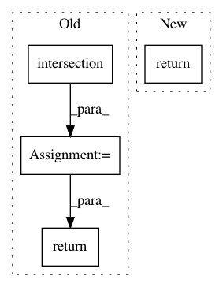

bcfb6021f2fd9b4412625ef7ee6bc703f40468b9,hypergan/gans/base_gan.py,BaseGAN,trainable_vars,#BaseGAN#,145
Before Change
def trainable_vars(self):
d_vars = list(set(self.d_vars()).intersection(tf.trainable_variables()))
g_vars = list(set(self.g_vars()).intersection(tf.trainable_variables()))
return d_vars, g_vars
def save(self, save_file):
print("[hypergan] Saving network to ", save_file)
os.makedirs(os.path.expanduser(os.path.dirname(save_file)), exist_ok=True)
After Change
return self.discriminator.variables()
def trainable_vars(self):
return self.trainable_d_vars(), self.trainable_g_vars()
def trainable_d_vars(self):
return list(set(self.d_vars()).intersection(tf.trainable_variables()))
In pattern: SUPERPATTERN
Frequency: 4
Non-data size: 4
Instances
Project Name: HyperGAN/HyperGAN
Commit Name: bcfb6021f2fd9b4412625ef7ee6bc703f40468b9
Time: 2019-01-10
Author: mikkel@255bits.com
File Name: hypergan/gans/base_gan.py
Class Name: BaseGAN
Method Name: trainable_vars
Project Name: graphbrain/graphbrain
Commit Name: 39376a7267f3727970fdecf185f861af203e3bba
Time: 2017-09-02
Author: telmo@telmomenezes.net
File Name: gb/metrics/hyper_similarity.py
Class Name: HyperSimilarity
Method Name: nsimilarity
Project Name: graphbrain/graphbrain
Commit Name: 39376a7267f3727970fdecf185f861af203e3bba
Time: 2017-09-02
Author: telmo@telmomenezes.net
File Name: gb/metrics/hyper_similarity.py
Class Name: HyperSimilarity
Method Name: similarity
Project Name: CyberReboot/NetworkML
Commit Name: cd83fed56a184063215f932ef768f8834328654c
Time: 2020-04-01
Author: josh@vandervecken.com
File Name: networkml/featurizers/funcs/host.py
Class Name: HostBase
Method Name: _df_proto_flags